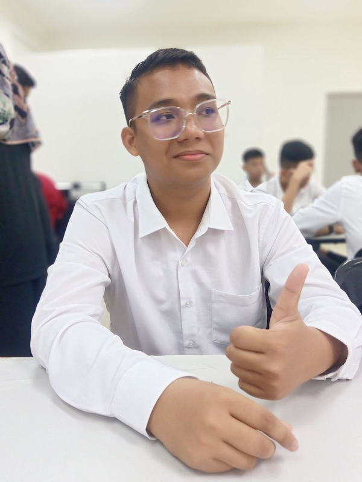

Industrial Training
Logbook
A polished, easy-to-update logbook website presenting daily progress, system development, documentation support, creative design, logistics, events and professional reflections throughout the internship.

MUHAMMAD KHAWARIZMI BIN MD SUZAMI
Student ID: 294489
Bachelor of Science with Honours (Information Technology)
Universiti Utara Malaysia
Time Capsule
Master Logbook
Search, filter, read, export and print the internship record from one professional control centre.
Project Showcase
Main internship output: three systems prepared to support JHEPA reporting and management work.
HEPA PRO
Performance reporting system for KPI, action plans, quarterly achievement and evidence tracking.
HEPA G-FUND
Income generation and funding system involving records, contributors, reports, import flow and deployment preparation.
HEPA QMS
Quality management system prototype with improved flow, structured sections and tutorial readiness.
Media Vault
Welcome video, evidence images and internship visual archive.
Break Room
Small interactive tools to make the site feel alive without disturbing the main logbook purpose.
Sudoku 4×4
Fill the missing numbers from 1 to 4.
Memory Match
Match all pairs with the lowest number of moves.
Reflex Tap
Wait for green, then tap as fast as possible.
Personality Check
A simple fun quiz about working style.
Focus Timer
Quick work sprint timer for logbook updates.
Entry Roulette
Jump to a random logbook record.
Update Guide
For daily updates, edit the clearly marked logbook data area inside this single index.html file.
1. Add New Entry
Use the generator button, copy the object, then paste it before the closing bracket of LOGBOOK_ENTRIES.
2. Add Evidence
Place image files inside images/ and use paths such as images/day64.jpg.
3. Upload GitHub
Replace only index.html, commit changes, then wait for GitHub Pages to refresh.